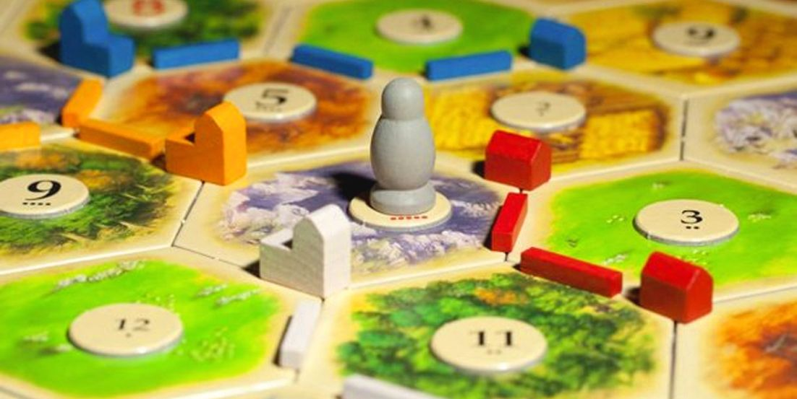

Neuroplasticity & Growth Mindset
Our brains can change
The brain is made up of billions of connected cells called Neurons and is one of the most complex objects in the known universe. All of our skills, traits, and memories exist in the brain as groups of related neurons firing together as a network. Neuroplasticity refers to the brains ability to change and adapt these networks as we grow.
In the last few decades it has been shown that brains remain able to adapt beyond our childhood years and well into adulthood. Encouragingly, even simply knowing that this is the case has been shown to improve learning outcomes in tightly controlled studies. Knowing that your abilities can improve with practice can increase motivation, which in turn can increase engagement and lead to a virtuous cycle of improvement.
There are many ways to promote neuroplasticity in adulthood but most boil down to stimulating your brain or getting out of your comfort zone. Some of my favourite ways to achieve this are by playing and learning new board games. This often involves understanding some new concepts, testing my problem solving skills, and interacting with friends.
Other important steps to take include being physically active (i.e. exercise) as well as getting high quality sleep. For more information check out this helpful article: How Neuroplasticity Works.
Attitude is the key
text